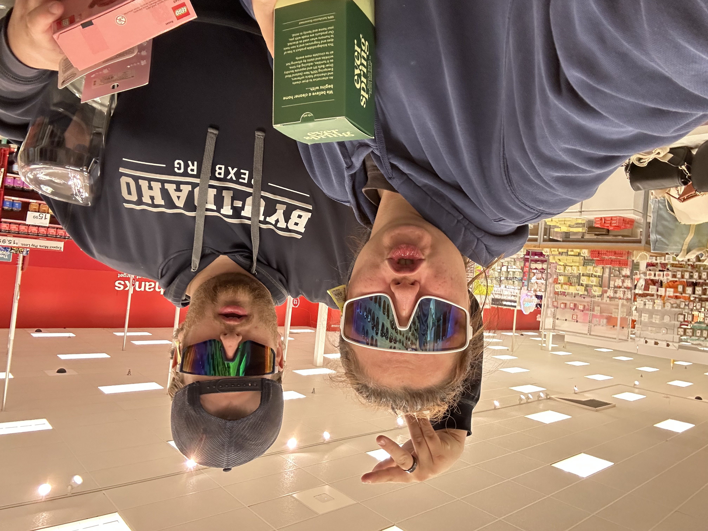

Sam Bradshaw
I am currently pursuing a degree in computer science with a passion for football, particularly as a Rams fan. Being single with no kids, I aim to leverage my learning in web design to enhance my CS expertise and bolster my resume. Through this course, I seek to gain a general understanding of website design to apply it professionally, particularly in building a website for a project I'm involved in.
I've been a member of the Church of Jesus Christ of Latter Day Saints since I was 8, finding inspiration in the teachings and leaders, my favorite scripute is Romans 8:18.